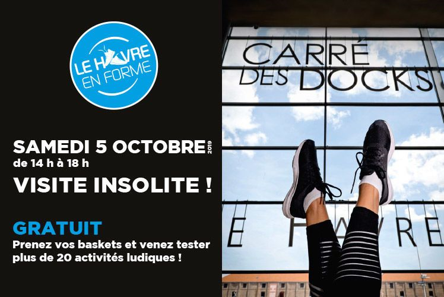

Innovation/Port/Récompense
Le Havre Smart Port city lauréat de l'appel à projet "territoires d'innovation" lancé par l'état
Un succèss collection pour Le Havre Smart Port City retenu dans le 3e Programme des Investissements d'avenir
Education
Le Havre labelisée "Cité éducative"
Le Havre parmi les 80 territoires labelisé par le gouvernement
Un été au Havre
Jouer dehors
Un été au Havre à vivre à partir du 29 juin
Culture
Au Havre, l'art fait le mur
Cérémonie/International/Tourisme
Il y a 75 ans: la libération du Havre
A ne pas manquer
Sport
Le Havre en forme au carré des docks
Un après-midi pour s'adonner à des activités physiques et découvrir un lieu culturel atypique
Le 5 octobre 2019 à 14:00 Carré des Docks - Le Havre Normandie
Réunion
Les dys en question: Dyspraxie, Dyslexie, Dysorthographie
Les cafés de la santé
Le 1 octobre 2019 à 09:00 La fabrique Pierre Hamet, centre
Conseil de quartier
Conseil de quartier Centre Ancien
Le 1 octobre 2019 à 18:30 Salle des fêtes Franklin
Exposition
Une étérnité au Havre
Du 2 octobre au 8 novembre 2019 Maison de l'étudiant
Salon
Journée nationnale des aidants
Du 4 au 9 octobre 2019 Espace Coty
Les + consultés

Enquête
Ouverture de l'enquête publique - Reglement local de la publicité de la ville du Havre
Du 3 septembre au 4 octobre 2019
Nature
Verdissons Le Havre
Je jardine ma rue pour embellir ma ville et favoriser la biodiversité
Dossier
Budget 2019
Appel à projets
Appel à projet politique de la ville 2020
Du 20 septembre au 2 novembre 2019